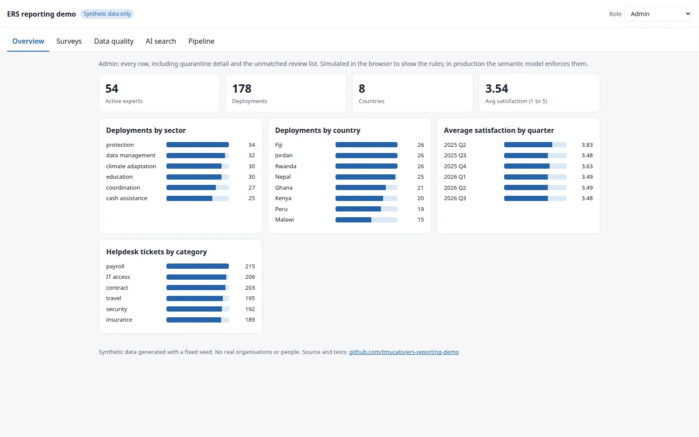
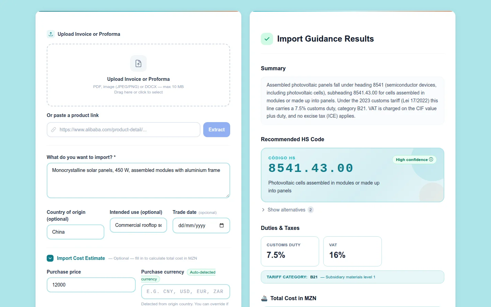
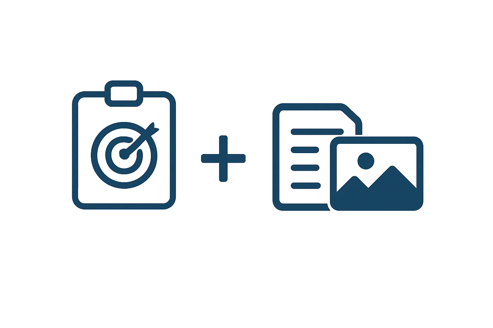

Data platform
ERS Reporting Demo
Bronze, silver and gold pipeline that joins HR, helpdesk, survey and deployment data into a pseudonymised star schema, with validation rules, expert matching, Kobo prefill and cited AI search.
I'm Tomás Mucato, an independent consultant. I build the pipelines, warehouses, dashboards and AI tools in between, most recently bringing more than 150 sources and around 200 million records into one warehouse.

Work usually starts with data spread across systems nobody fully trusts, and ends with something a team can run on its own.
Pipelines and warehouses that bring many source systems into one reliable reporting layer.
Validation rules, quarantine, identity matching and access control, so numbers can be trusted and audited.
Power BI models, KPI scorecards and dashboards that teams run without engineering support.
Retrieval augmented generation, NLP and document automation with cited, verifiable answers.
Containerised services, CI/CD and secured Linux infrastructure for repeatable releases.
Secure integrations between core systems and external APIs, and modernisation of legacy applications.
Each one shows the problem, the approach and the stack behind it.
Bronze, silver and gold pipeline that joins HR, helpdesk, survey and deployment data into a pseudonymised star schema, with validation rules, expert matching, Kobo prefill and cited AI search.

Customs guidance platform that classifies products into HS tariff codes and returns duties with cited excerpts from the official tariff.

Sentiment classification from text and images: TF‑IDF text features and EfficientNet image features fused with a random forest.
Tell me where your data lives today and what you need from it.